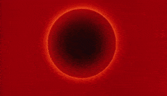

Historia
23/11/2021
Motivaciones
La principal motivacion fue que la historia de Dragon Ball es algo larga ,mi mision es achicar eso y exponer puntos de vista que habeces no se dicen
El inicio de todo-Año...
La entidad cosmica que se alza sobre todo y todos Zeno (creador de todo)crea 18 Universos y a un guardian.
El gran sacerdote(Daishinkan) creado por Zeno crearia los angeles,criaturas ancestrales que se reparten
por los 12 universos,especificamente 1 por cada uno ,se dedican principalmente a servir y entrenar a
un Hakaishin(Dios de la destruccion),que igual a la par crearian los superemos kaioshins y kaiosamas,estos nacerian
apartir de lo creado y gracias a los frutos de un arbol(los frutos dorados son kaioshins y los demas son kaiosamas)
dotasdos al igual de un gran poder pero millones de veces inferiores a comparacion de un Hakaishin.
Los Hakaishines son 1 por universo,encargados de mantener orden en sus univeros viendo que especies evolucionan y que otras se estancan
cuando se estancan o ven que su evolucion no es lo que esperaban tienen permitido destruir o aniquilar esa civilizacion.
Ellos fueron simples mortales que fueron reclutados y entrenados alcanzando una gran fuerza destructiva,pese a esto,van ligados con
la vida de un kaioshin si el supremo kaioshin llegara a morir este ultimo moriria ya que son un paquete.
avanzando en el tiempo
"Despues de la creacion viene la destruccion"De 18 univeros qyue eran antes pasaron a hacer 12,esto se debe a que en un arranque de ira Zeno-sama borraria 6 universos quedando
un total de 12 Universos.
Cada Universo tiene una contraparte cuya suma de numerologia da 13 y son paralelos entre si.
Y despues de esta teoria del big bang en Dragon Ball,vienen los hechos ya no divinos si no de mortales...